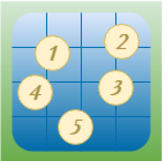

Home
Currently, I am studying Computer Science in University of Surrey (second year). Before that I was an intern Software Developer at Tehnologica Ltd., where I gained invaluable experience in the sphere of programming, having participated in several team projects (for NATO and Bulgarian Gov.).
As far as my interests are concerned, Mathematics has always been my favourite science, because I reckon that it is in the base of everything – not only in algorithms, data-structures, modelling and simulations, but also it is an irreplaceable part even in our everyday lives. Therefore, I consider that being a capable software engineer is not possible without a great deal of mathematical knowledge. Moreover, as I had a conditional offer from University of Cambridge to study Mathematics (after 2 interviews and 2 tests there) and always try to expand my mathematical capabilities, I believe that I will have the opportunity to bloom in the sphere of Computer Science.
On the other hand, my other main interest is Software Developing. It all started in the 5th grade when I started attending extracurricular activities at my school, where we created simple console applications in C++, in order to develop our algorithmic thinking. I decided I want programming to be my future. Consequently, I learned a lot from these activities, Informatics classes at school (6+ hour/week), in University of Surrey, work and mostly from information online (primarily from SoftUni, Telerik Academy, YouTube etc.). Now I have deep understanding in the science:
- .NET (Frameworks and Core): C#, EF, ASP.NET, WPF
- C/C++
- Java, MySQL, Swing
- SQL Server, T-SQL
- HTML/CSS, JavaScript, Bootstrap
- JSON, XML
- OOP, High-Quality Code, UML, Asynchronous code and Multi-threading, Data Structures and Algoriths
- Arduino Uno (C/AVR Assembly)
- Android: Activities, Layouts, SQL-Lite, Multi-threading
I have participated in several projects in a team and myself. What I want is to heap more knowledge and experience.
Experience
Technologica Ltd.
Software Engineer Intern — Jul 2019 - Sep 2019
While working at Technologica Ltd. I was part of the .NET department of the company and worked as Software Engineer Intern. I had the opportunity to be part of the team developing the military data exchange system of the Bulgarian National Codification Bureau for NATO. My responsibility in the team was to create the core of the system, which was validating, processing, saving the messages and responding to them. The project is written using .NET (C# for the business logic, ASP.NET Core MVC for the Beck-end, Oracle for the database, Entity Framework for the connection with the database). My main accomplishments were in the business logic and working with the database.
I was also part of the team redesigning and rewriting RegIX (Registry Information eXchange system) – a web information system for data exchange between government institution in Bulgaria. My responsibilities were in the Back-end – controllers, services and repositories for the REST services used for exchanging data.
At Technologica I met many friendly people, which are still very close friends to me, and found a friendly working environment, encouraging everyone to show the best version of themselves.
Gamesoft Ltd.
Junior Software Engineer — Oct 2017 - Sep 2018
I was working in Gamesoft Ltd. as a software engineer in order to broaden my horizons in the sphere of computer science. I gained a great deal of knowledge about the principles of Object-oriented programming and enhanced my skills as writing high-quality programming code was an essential part of my job. Moreover, I had to use unit testing almost for each fragment of code I used to wrote as it was absolutely essential if the code was to be changed in the future and used by other software engineers.
While working there my main assignment was to write classes (or functions) by previously established requirements and functionalities. For that I used primarily C#, Java or C++, whichever was needed for the specific project. This thought me how to be more flexible and adapt to what is needed by me. I also had to alter and improve websites when needed using JavaScript and HTML/CSS.
Working with databases was also part of my responsibilities while I was working in Gamesoft Ltd. I used to write queries for procedures, views, transactions and functions for the databases of our clients. When using databases in applications I used Entity Frameworks in .NET Frameworks or .NET Core. Furthermore, .NET turned out to be my most preferable programming technology for creating software.
Education
University of Surrey
BSc (Hons) with Year in Industry — Oct 2018 - 2022
I am studying BSc (Hons) Computer Science second year (sandwich course) in University of Surrey where I am improving and affirming my knowledge in Software Engineering. The third year of my course is industrial placement.
1st Semester: (91%)
- Programming Fundamentals (94%): the basis of software developing; object-oriented programming; Java; Unit testing with JUnit<
- Web and Database Systems (88%): Computer Networking: Web, URL, relative and absolute paths, HTTP requests, Cookies, Web Security, HTML, CSS, PHP, JavaScript (jQuery), data objects transmission formats - XML and JSON, Databases - MySQL
- Computer Logic (87%): how a computer works at the lowest levels, logic gates, truth tables, combinational circuits, adders, latches and flip-flops, number bases, Arduino: AVR Assembly, C programming language
- Foundations of Computing (93%): Set Theory, Number theory, base functions theory, Logic
2nd Semester (90%):
- Software Engineering (85%): designing - UML, Software Requirements Specification, test planning; implementing and testing (unit testing and requirements testing) desktop software systems (Java, Swing - WindowBuilderPro, JUnit)
- Mobile Computing (79%): operating systems basis - bootloader, terminals, multi-threading, thread pool; Android: adb and fastboot, applications - Layouts, Activities, SQLite and multi-threading (Java was used)
- Data Structures and Algorithms (98%): algorithm analysis (Big O, Big Omega, Big Theta, Little o notation), recursion, sorting - Bubble, Insertion, Heap, Quick, Merge, Radix; graph algorithms and complex data structures - stacks and queues, linked lists, Binary trees, heaps
- Foundations of Computing II (99%): Calculus - limits, continuity, derivatives, integration and applications
Sofia High School of Mathematics
High School Education — 2010 - 2018
I studied in Sofia High School of Mathematics (SHSM) from 2010 to 2018. It is considered to be the best secondary school in Bulgaria, especially for Mathematics and Computer Science, and is the hardest one to get admitted to. The students of SHSM are globally known for their achievements not only for Mathematics and Computer Science, but also for natural sciences such as Physics, Chemistry, Astronomy etc.
My high school was the place I found my passion for creating software as there I started attending extracurricular classes for programming in the 6th grade. In these classes we used to construct simple console applications in C++ in order to develop our algorithmic thinking. Eventually, we had 6+ hours a week Programming classes, in which we studied the basis of object-oriented programming and high-quality code.
At Sofia High School of Mathematics I obtained a Diploma za Zavarsheno Sredno Obrazovanie with an Overall Score: Excellent 5.96/6.00
The scores of my state matriculation exams were as follows:
- Physics and Astronomy: Excellent 6.00/6.00
- Mathematics: Excellent 6.00/6.00
- Bulgarian Language and Literature: Excellent 5.64/6.00 (the only grade different from 6.00 in my whole diploma)
Projects
NATO Data Exchange Redesign for Bulgarian NATO Codification Bureau (BulCod)
Technologica Ltd. — Jul 2019 – Sep 2019
BulCod was about redesigning the NATO system to work with XML instead of an old format following the encoding of 80-column punch cards initially used in the 1960s. My responsibility was to design and develop the core which was performing the destination validation of the messages, as they should be consistent with the NATO Database and follow some specific rules (defined in ACodP-1 NATO Manual on Codification) for the information they encode. After that the messages are saved into the database, their actions performed in the system and finally XML response message is generated, which is transferred back to the NATO Codification Bureau, that sent the initial message.
RegIX - Registry Information eXchange system
Technologica Ltd. — Aug 2019 – Sep 2019
Android Multi-Touch Tester
University of Surrey — May 2019
I created an Android application, written in Java, whose main aim was to test the multi-touch maximum of a display. It was a project in my university. The application's main difficulties were the simultaneous registering of touches and recording them asynchronously to a database. It is also able to display all touches made on the display while testing since the installation of the application.

Football Competition Manager
University of Surrey — May 2019
As a project from university, I created a Football Competition Manager. It is an application, written in Java, whose aim is to manage the information of real-life football competition in an easy way. The application combines java classes concerned with the football part of the app and GUI made with WindowBuilderPro.
Football Competition Manager
University of Surrey — May 2019
As a project from university, I created a Football Competition Manager. It is an application, written in Java, whose aim is to manage the information of real-life football competition in an easy way. The application combines java classes concerned with the football part of the app and GUI made with WindowBuilderPro.
Football Competition Manager
University of Surrey — May 2019
As a project from university, I created a Football Competition Manager. It is an application, written in Java, whose aim is to manage the information of real-life football competition in an easy way. The application combines java classes concerned with the football part of the app and GUI made with WindowBuilderPro.